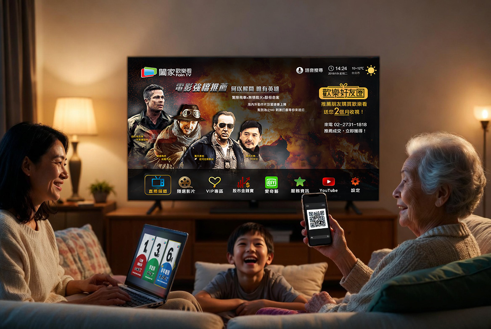
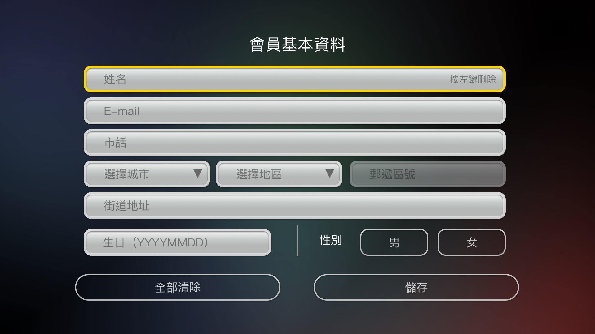
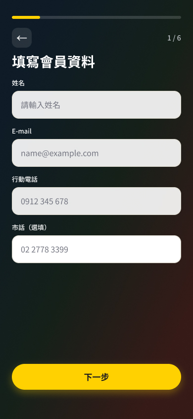
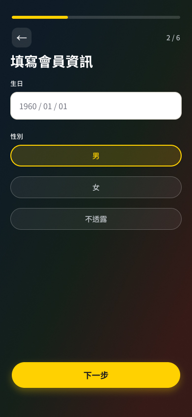
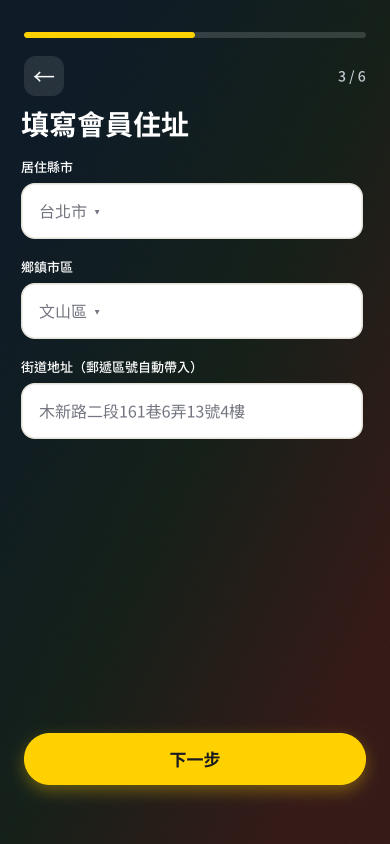
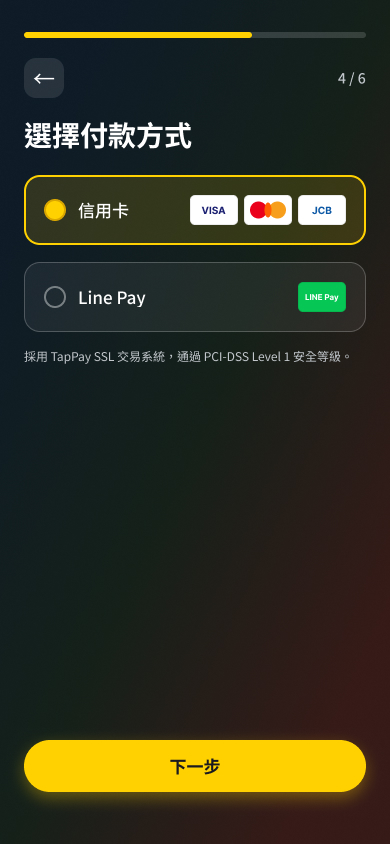
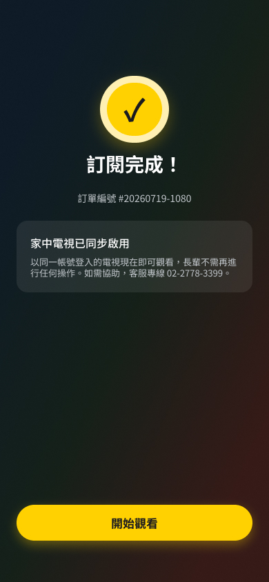
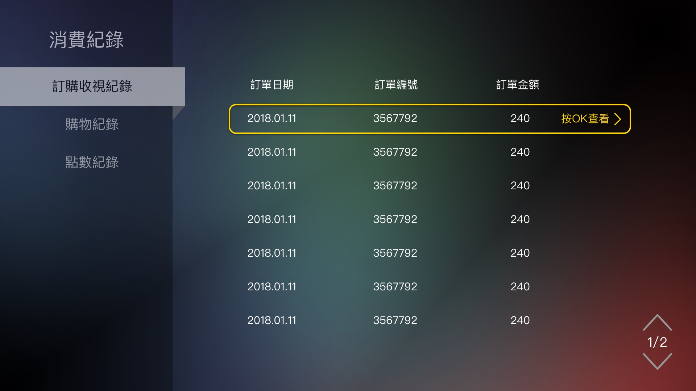

Case · Cross-device UX
跨 TV · Mobile · Web 的訂閱體驗設計
1M+ 用戶 · 家庭與年長觀眾 · 訂閱制 + 商城
My Role — UI/UX Designer
2 Designers · 1 PM · 3 Engineers

Symptoms
Key context TV 主力用戶約 60 歲
Design process
先打開問題，再收斂原因；方案之後才做驗證。
確認問題方向與普遍程度——訂閱困難是否真的大規模發生。
深入年長用戶與代訂情境，挖出遙控器、email、誰在付費。
方案落地後測任務完成與卡點，再改跨裝置路徑。
Insights
遙控器輸入卡號與個人資料根本不可能。一個繁體中文字要填好送出至少需按十次以上，把自己名字輸入完就已經累了。
登入流程的 email 根本行不通——年長使用者根本沒有使用 email 的習慣。→ 改用電話號碼登入
訂閱常由子女在手機／電腦代完成
System · 01 / TV
TV = 看／驗證
10-foot 環境：電話註冊、大字級、遙控器可完成的最少步驟

會員基本資料 · 焦點框 · 遙控器操作｜操作者：觀看者
System · 02 / Mobile
Mobile = 訂 · 子女代訂主場 · 七步完成
高輸入任務放在觸控裝置；完成後電視同步啟用





System · 03 / Web
可收視／消費紀錄 · 兩端比較
Web 端提供詳細的用戶資訊

Validation
任務能否完成、時間、卡點 → 再修改
依測試發現調整跨裝置路徑
Results
跨裝置一致的，是心智模型與設計標準，不是介面。